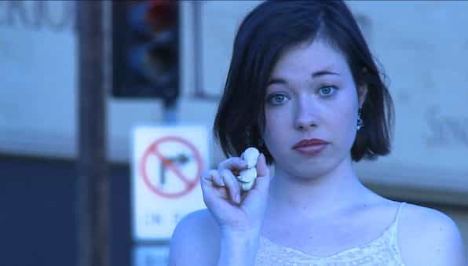
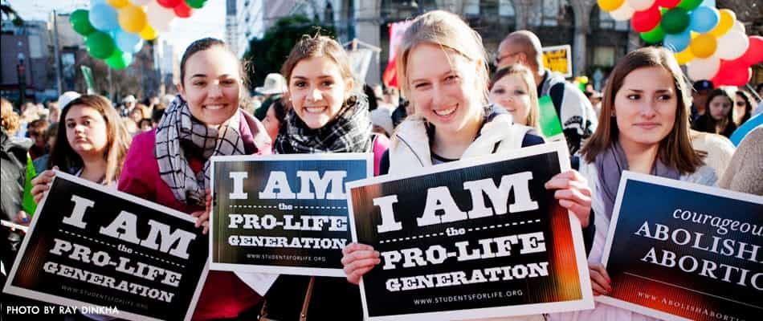

< < < Back
Why You Should Shun Girls Who Support Abortion – Return Of Kings
When it comes to the abortion issue, there’s enough squid ink being squirted in our faces on a daily basis to blind an elephant. I’m politically agnostic on abortion and always have been: if it were banned tomorrow, I wouldn’t lift a finger in either opposition or support. However, I’ve decided in the past year that I will not date any girl who supports abortion, whether she’s a wishy-washy “pro-choice” type or she actively brags about killing her own children.
My argument for shunning girls who are pro-abortion is based in self-preservation. Regardless of her other (apparent) qualities, if a girl is in favor of abortion, there is evil dwelling in her soul. If you let her into your life, she will do her best to ruin you and bring you down to her level. Here’s why…
Killing Yourself To Live
Despite what the leftist media tells us, moral beliefs and personality traits don’t exist in a vacuum: they bleed out into other aspects of your persona. There’s no such thing as a “hooker with a heart of gold”: a girl who behaves abhorrently in one portion of her life is likely to be an abhorrent person in general. I call this “Degeneracy Magnetism,” where people indulge in multiple, seemingly unrelated forms of deviance at the same time.
For example, overweight and obese girls have more sexual partners on average than girls who are in shape, because the same lack of impulse control that leads them to stuff their faces with food also leads them to hoover up cocks left and right. Similarly, homosexuals and bisexuals are more likely than heterosexuals to be mentally ill: their malfunctioning sexual impulses lead to their entire personalities being dysfunctional.

Along the same lines, girls who get tattoos, piercings or dye their hair unnatural colors are harming their own bodies, the very essence of their material existence. They’re on the same spectrum as emo kids who cut themselves. A girl who has such little regard for her body that she’ll stick painful metal objects in her most sensitive areas for fun will have an equal lack of regard for her boyfriend/husband, family or friends.
How does abortion fit into all this? Simple: aborting your own child is an act of self-mortification one step below suicide. A baby consists of half of its mother’s genetic material and is the result of sexual intercourse, an act whose very purpose is to create new life. If a girl is so revolted by a lifeform that is genetically 50 percent her that she’ll go to Planned Parenthood to get it flushed out, she will treat everyone else in her life with the same level of cruelty.
You don’t even have to take the view that life begins at conception to realize what’s wrong with girls who abort their own offspring. Sex’s central function is to propagate the human race: anything else good that results from it, from orgasms to marital bonding, is secondary. When you sleep with someone else, you are consenting to the creation of a new life, whether you realize it or not and whether conception actually occurs. If you’re repulsed by the natural byproduct of that union, there’s something seriously wrong with you.
The reason why female pro-life activists tend to be more attractive than pro-abortion ones is because a girl’s stance on the issue is one of the many things that reflects her soul and personality. Similarly, the reason why lesbians—who don’t have to worry about pregnancy by definition—are some of the loudest supporters of abortion is because they’re twisted human beings. I found all this out the hard way.
“Don’t Worry: If I Get Pregnant, I’ll Just Abort It!”

A long time ago, I was involved with a girl who was militantly opposed to having children. Our on-and-off relationship was anchored around her depressive episodes, where she would get drunk for days on end and talk suicide, hoping I’d drop everything to make sure she was okay. During the final bender I nursed her through, I had to recruit her sister to help me get into her apartment. After we talked her down from her despair and her sister left, she cajoled me into hooking up with her before we both passed out.
The next day, I was working on my computer and helping taper her off when she suddenly came to. She was still naked from last night and drunk beyond the point of sanity.
“I wanna have sex,” she whined. “That’s what you’re here for, isn’t it?”
“No, I’m here to make sure you get better,” I dismissed her.
“C’mon, c’mon, c’mon!” She sounded like a little kid begging her parents to buy her a toy. “Make yourself useful, dumbass!”
“Okay,” I slowly closed my laptop and glared at her as she convulsed on the bed. “Can’t you say something sexy? Be sexy. Motivate me.”
She gaped at me like I’d asked her to fellate a dog. She then rolled over; I could practically see the gears in her head sputtering and throwing off sparks and smoke.
“C’mon,” she repeated, “gimme some sex.”
I didn’t want to sleep with her, both because I’d become increasingly disgusted by her behavior over the past few months and because at that moment, she was as attractive as a sidewalk diarrhea dump in August. While she was skinny and cute enough, she hadn’t showered, shaved or eaten in days. She reeked of ketosis and cheap gin, and not only was her leg, armpit and pubic hair growing back in, hair was sprouting on her nipples and stomach.
“Fine,” I grumbled, hoping she would go back to sleep after I banged her.
“Yaaaaaay!” she cheered and clapped like a seal.
I pulled out my wallet and rummaged around for a spare Trojan. No dice.
“I don’t have a condom,” I remarked with barely-contained glee. “Oh well.”
“Wait! I have condoms!” she barked.
Of course you do, I thought.
Like she was being chased by a grizzly bear, she leaped off the bed and sped towards her dresser. She opened the topmost drawer, stared at it for five seconds, then slammed it shut.
“I can’t find the condoms,” she sighed. Then her face suddenly contorted into a freakish smile, like a snake preparing to scarf down a mouse.
“Oh well,” she exclaimed while shrugging her shoulders. “An abortion is only $600, and my period ended two days ago!”
Keep in mind that this was a girl who was so disgusted by the idea of giving birth that she insisted on condoms every time we had sex. During one of her previous drunken episodes, I was lubing her up and she freaked out because she mistook my middle and ring fingers for my dick. Another time, she had blurted out, “Don’t worry: if I get pregnant, I’ll just abort it!”
At that moment, I wanted to do nothing more than knock her up. Not because I wanted to have a baby with her—believe me, she’s doing America, the white race and existence itself a favor by not breeding—but because I wanted to make her suffer for a few weeks. She’d have tons of fun begging for the money to get an abortion and explaining to her friends why she was acting even weirder than usual. Fortunately, I stopped myself before I could actually carry out my plan.
Lest you think this was an isolated example, this girl had been riding the crazy train long before this point:
- Her alcoholism was so severe that her ex-boyfriend’s parents had forced her to join Alcoholics Anonymous a few months before. Half-a-year and three benders later, she gave up on sobriety and started drinking again, even after she’d told me that “[she] could feel [her] brain isn’t working as well” and “[her] heart isn’t working as well” due to her nonstop boozing.
-
She had been in and out of mental institutions her whole life, most recently a few months before, when she had tried to commit suicide by walking into traffic after her previous boyfriend dumped her.
- After promising to marry another man, she cheated on him repeatedly, first with me, then with her drug dealer, and then (possibly) with a black lesbian who followed her home from a bar. She justified it by saying “he doesn’t expect [her] to be a monk” while he figured his life out.
- Despite claiming to be close to her sister, she repeatedly lied to her about the extent of her psychological and drug addiction problems. I had to explain to her sister that she’d been going on benders and threatening suicide for months.
- Despite her supposed love of animals, she was neglectful of her pets, letting them go hungry while she wallowed in self-pity and drank herself stupid.
- During a period where I was being stalked and needed support from my friends, she started fighting with me over something I’d already apologized for months before, all because she needed to redirect the spotlight back onto herself.
I’d stuck with her for so long because I genuinely liked her (we had similar personalities and interests) and she was my physical type. It took me a couple months of being away from her to realize that I’d dodged a huge bullet. Even as she claimed she wanted nothing more than to get married or told me how “sweet” and “handsome” I was, she proved she was a self-destructive, callous individual through her beliefs and actions.
Love Of Life

Children are the weakest and most vulnerable members of the human race, so what does it say about the character of those who abuse and kill them? Answer: they’re monsters who care only about their own gratification and place zero value on human life. For example, in one of his recent podcasts, Common Filth discusses a girl who whined on Reddit about her boyfriend leaving her over her decision to abort his baby.
Leftists have pushed the “pro-choice” narrative to obscure the reality of abortion and the girls who indulge in it. We’re lead to believe that girls only get abortions after being violently raped by their own fathers, when the reality is that the average Planned Parenthood client is a slut who gets baby after baby sucked out of her uterus because putting on a condom is just too much effort. For example, in his book Black Passenger Yellow Cabs, Stefhen Bryan discusses how Japanese girls use abortion as their primary method of contraception, because they’re afraid of losing “face” by buying condoms or birth control pills.
While girls are free to make their own decisions, I’m also free to avoid the ones who make decisions that are morally abhorrent. Regardless of whether I have children, I’m not going to shack up with a girl who treats her own flesh-and-blood like a tumor to be cut out. Girls who kill their own children despise life itself and will do their best to destroy yours. Don’t let them.
Read More: 6 Reasons Why We Should Support Abortion